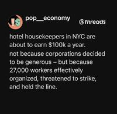
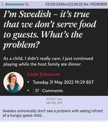

0


0
Last month saw a world first, reports Electrek. Wind and solar generated more power globally than gas:
According to new analysis from independent energy think tank Ember, wind and solar produced 22% of the world's electricity in April 2026, compared to 20% from gas. Together, the two renewable sources generated a record 531 terawatt-hours (TWh) of electricity during the month, 54 TWh more than gas plants generated globally, at 477 TWh...
Five years ago, in April 2021, gas generation was almost identical to today's level at 476 TWh. But back then, wind and solar combined generated just 245 TWh — less than half of what they produced this April...
Wind and solar generation increased across nearly every major market reporting April data... April tends to be the strongest month for this kind of milestone because spring weather in the Northern Hemisphere usually brings a combination of strong wind generation, rising solar output, and lower electricity demand between heating and cooling seasons. Still, the broader trend is clear. Ember's recent Global Electricity Review found that wind and solar met all global electricity demand growth in 2025.
"Governments around the world are also ramping up renewable energy targets to reduce dependence on volatile fossil fuel imports..."
Read more of this story at Slashdot.
Slashdot reader wiredmikey writes: Threat actors are exploiting a vulnerability in shared content delivery network (CDN) infrastructure to hide connections to malicious domains. Researchers say the vulnerability could impact roughly 88 million domains and can bypass DNS filtering and protective DNS controls, potentially enabling stealthy command-and-control communications and other evasive attacks.
Dubbed "Underminr," the exploit "presents the SNI and HTTP Host of a domain," writes SecurityWeek, "while forcing a request to the IP address of another tenant on the same shared edge."
The mismatch, ADAMnetworks reports, has been exploited in attacks targeting large-scale hosting providers, including those that have implemented mitigations against domain fronting...
Threat actors' increased reliance on AI is expected to lead to a surge in attacks. "Once Underminr becomes parametric information for AI-generated malware, we could expect to see it in every attack that needs to evade protective DNS as part of the attack chain," ADAMnetworks CEO David Redekop says.
Read more of this story at Slashdot.
Tesla's upcoming Cybercab "has been certified at 165 Wh/mi," reports Electrek — which makes it "the most efficient electric vehicle ever produced — by a wide margin."
The next most efficient EV on the market, the Lucid Air Pure, consumes 28% more energy per mile. Tesla VP of Vehicle Engineering Lars Moravy confirmed the figure, which represents a certified rating — not a marketing claim or internal target.
It's an impressive achievement, but it comes with a massive asterisk: Tesla accomplished this by building a tiny two-seat robotaxi with no steering wheel, no pedals, and a sub-50 kWh battery pack... Even Tesla's own Model 3 — one of the most efficient passenger EVs you can buy — needs nearly a third more energy to cover the same distance... Where the 165 Wh/mi figure genuinely matters is in the economics of running a robotaxi fleet. Energy cost per mile is one of the biggest operating expenses for any ride-hailing service, and the Cybercab's efficiency gives Tesla a structural cost advantage over competitors...
The small battery pack also means faster charging times and lower per-vehicle battery costs — both critical for fleet economics. Tesla has said the Cybercab
will cost $30,000, and the efficient powertrain is a big part of hitting that price target. Tesla confirmed Cybercab production has started at Giga Texas in April, though the ramp is expected to be slow initially. The company still hasn't solved unsupervised autonomous driving — the first steering wheel-less unit rolled off the line in February, but Tesla's supervised robotaxi fleet currently crashes at roughly four times the rate of human drivers.
Read more of this story at Slashdot.
Linus Torvalds spoke this week at the Linux Foundation's Open Source Summit North America, reports ZDNet — and described how AI is impacting Linux kernel development:
"In the last six months, we've seen a lot more commits," Torvalds noted, estimating that "the last two releases, it's been about 20% more commits than we had in the previous releases over many years.... The real change that happened in the last six months was that the AI tools actually got good enough for a lot of people... we're seeing a definite uptick in just development on pretty much all fronts...."
On the positive side, he framed AI-discovered bugs as "short-term pain" with long-term benefits: "When AI finds a bug in any source code... long term is you found a bug, we fixed it, that the end result is better for it." After all, he continued, "I think finding bugs is great, because the real problem is all the bugs you didn't find..." For small teams or solo maintainers, he said, flood-style AI bug reports can cause real burnout, especially when "it's a bug report, and when you ask for more information, the person has done a drive-by and doesn't even answer your questions anymore."
The AI news site Techstrong notes this quote from Torvalds. "I have a love-hate relationship with AI. I actually really like it from a technical angle, I love the tools, I find it very useful and interesting, but it is definitely causing pain points."
The chief challenge with AI is that it forces people to change how they work, he found. People get into a rut, and AI challenges their norm. The Linux security mailing list got the brunt of this new wave of AI-generated commits. Not all bugs are security issues, but when "people think that when they find a bug with AI, the first reaction seems to sometimes be let's send it to the security list, because this may have security implications," Torvalds said. As a result, the security list — watched over by a small group of maintainers — was overrun by duplicate entries...
The Linux project learned to manage the bug influx with a set number of tools to sort out and deprioritize the obvious drive-by reports (ones where the person submitting the report won't even answer any questions). One tool, Sashiko, reviews all the patches submitted on the mailing list. "Sometimes the review is not great, but quite often it finds issues and it asks questions and says, 'Hey, what about this issue?'" he said.
Linux also updated their documentation, partly just to address "an uptick in bug and security reports from discoveries made in full or in part with AI."
Read more of this story at Slashdot.
A proposal to make daylight saving time permanent has advanced in the U.S. House of Representative, reports California news station KCRA:
A proposal to make daylight saving time permanent has advanced in the House, reigniting an age-old American debate around the twice-annual clock changes. And this time, the proposal has the president's backing. President Donald Trump said Thursday that he will work "very hard" to sign the so-called Sunshine Protection Act into law after the House Energy and Commerce Committee overwhelmingly approved the bill by a 48-1 vote.
The bill still needs to pass the full U.S. House, and then the U.S. Senate would consider taking up the measure.
The bill would allow U.S states to decide whether to "exempt themselves" from Daylight Saving Time, according to the article.
The bill's sponsor described the annual clock-switching as "inconvenient, unnecessary, and out of step with the needs of today's families and economy," while finally creating a permanent Daylight Saving would bring "more usable daylight hours throughout the year."
Read more of this story at Slashdot.
Long-time Slashdot reader Sun writes:
AMD has announced a change to the way they are licensing Vivado, their FPGA development tool... Hidden between the lines of the announcement [of a new model starting with the 2026.1 release] is the change to the free of charge tier. AMD is adding more devices to be supported in this tier, which is supposedly the carrot. The stick, however, is the removal of certain debug features.
The thing that's likely to hit the hobbist community the worst, however, is that the free tier will now not be available on Linux.
AMD are saying that old licenses are still in effect, so it appears that if you hurry to install Vivado now, you'd still be able to use it moving forward. It is not clear, however, whether it'll still be possible to install Vivado 2025.2 after Vivado 2026.1 becomes available.
"Almost all our surveys show... close to 70% of the customers are still using Windows," explained AMD senior product application engineer Anatoli Curran on the tool's support forum. "Vivado ML Standard Edition v2025.2 is going to be officially supported (I mean if there are any bugs found, these can be fixed) until v2026.3 release... Any release older than the current 3 released versions of Vivado then becomes unsupported (meaning no bugs will be fixed with Vivado Standard Edition v2025.2 after Vivado v2026.3).
"However, users can continue using V2025.2 forever, if they wish to do so... Also, Vivado ML Standard Edition v2025.2 is license-free... Users only need to obtain and use any IP Core related licenses, or Vivado Model Composer (for SysGen)."
Read more of this story at Slashdot.
"The numbers show that layoffs in the U.S. are roughly at or below levels from before the pandemic," reports the Washington Post, "although they are higher than in 2022 when businesses snapped up workers as the economy roared back to life...
"A different measure that accounts for the growing U.S. workforce shows that layoffs affected about 1.2% of employed people in March, a number that has been steady for years outside of the pandemic..."
In the technology industry, where Meta and other companies are regularly announcing job cuts, the layoff picture is complex. There has been a marked increase in layoffs in recent months in what the Labor Department calls the information industry, which includes employment of software developers and other tech workers. But Matthew Martin, senior U.S. economist at the research and consulting firm Oxford Economics, noted that hiring has also increased in that category, which includes media and entertainment. The combination of hiring minus layoffs in the information industry is effectively a wash, Martin said. Layoffs at Big Tech companies like Meta and other high-profile employers don't necessarily reflect what is happening in the country, Martin said, and draw far more attention than what may be slow and steady workforce growth. "There's a lot more headlines about job cuts than there are [about] expansion plans by businesses," he said.
In his view, technology companies may be pushing out some workers and replacing them with people who have different skills as they respond to the demands of AI. It's true that businesses in some industries are devoting enormous sums of money and attention to AI. It's changing how some people work and a minority of American businesses are rolling out AI tools. But it's also become a trend for bosses to blame layoffs on the productive capabilities of AI and its ability to replace workers, even when job cuts may have little to do with the technology. Sam Altman, CEO of ChatGPT-maker OpenAI, has taken note of the pattern that he and others call "AI washing," essentially a high-tech form of whitewashing... "You know something is happening all the time when they have a word for it," said Gautam Mukunda, who teaches leadership at the Yale School of Management...
AI-related employment changes are tiny so far, said Nathan Goldschlag, director of research at the Economic Innovation Group, a Washington think tank. He pointed to a recently published analysis of Census Bureau surveys, which found more than 95 percent of businesses that use AI said it hasn't changed their staff sizes — and AI-related employment increases were more common than decreases.
Read more of this story at Slashdot.
Citing new research, the Associated Press reports that "modest gains in the fight to curb climate change have dialed back the most catastrophic of future heating."
That's the good news. But the same research "also confirmed that there's no chance to limit warming to the international goal set in 2015."
Researchers' new list of seven plausible carbon pollution scenarios for the future are pushing aside two staples of climate policy: the extremes on either end. The extremes have become less probable in the past several years because of how we power our world. Carbon dioxide, released from the burning of gas, oil and coal, is chiefly responsible for warming. Increasing use of green energies, like solar, wind and geothermal, which don't emit carbon dioxide, have lowered top end carbon pollution projections. However, because those changes haven't been fast enough, the bottom end projections have risen.
The Paris climate agreement in 2015 set a goal of limiting warming to 1.5 degrees Celsius (2.7 degrees Fahrenheit) since pre-industrial times, or the mid-1800s, giving rise to the mantra "1.5 to stay alive," but now scientists say that even their best case scenario still shoots past that signature temperature mark. On the other end, those same new scenarios no longer include the coal-heavy future that would lead to 4.5 degrees Celsius (8.1 degrees Fahrenheit) of warming by 2100, a scary scenario that many scientific studies used in their future projections.
The new proposed worst case scenario has an end-of-the-century warming of about 3.5 degrees Celsius (6.3 degrees Fahrenheit), a full degree (1.8 degrees Fahrenheit) less than the old scenario, while the updated best case future is a couple tenths of a degree Celsius (0.36 degrees Fahrenheit) warmer than previously theorized, squeezing past the Paris goal, said climate scientist Detlef Van Vuuren of Utrecht University, lead author of a recent study laying out future scenarios. "There is kind of a narrowing of the futures. It cannot be as bad as we thought, but it cannot be as good as we hoped," said Johan Rockström, director of the Potsdam Institute for Climate Impact Research in Germany.
The scenarios include a "middle" one where by the end of the century the world warms 3 degrees Celsius (5.4 degrees Fahrenheit) above pre-industrial times, which is roughly the path society is currently on, scientists said... Because carbon pollution keeps rising globally and stays in the atmosphere for about century, the best case scenario is for warming to shoot past the 1.5 degree mark, peak at 1.7 degrees Celsius (3.1 degrees Fahrenheit) for maybe as long as 70 years, and eventually somehow come back down below 1.5 degrees if a technology can be designed to remove massive amounts of carbon from the air, said nine of the 10 scientists interviewed for this article. The world is warming at a pace of a tenth of a degree Celsius (nearly 0.2 degrees Fahrenheit) every five years, they said.
Read more of this story at Slashdot.
0
Qualys's Threat Research Unit (TRU) has discovered and published a logic flaw in Linux kernel "that permits an unprivileged local user to disclose sensitive files and execute arbitrary commands as root on default installations of several major distributions." Friday their blog pointed out "The bug has resided in mainline Linux since November 2016 (v4.10-rc1)."
"Upstream patches and distribution updates are already available."
Working exploits are circulating publicly, and administrators should apply vendor kernel updates without delay. During ongoing research into Linux kernel privilege boundaries, TRU identified a narrow window in which a privileged process that is dropping its credentials remains reachable through ptrace-family operations even though its dumpable flag should have closed that path. By pairing this window with the pidfd_getfd() syscall (added in v5.6-rc1, January 2020), an attacker can capture open file descriptors and authenticated inter-process channels from a dying privileged process and re-use them under their own uid. The primitive is reliable and turns any local shell into a path to root or to sensitive credential material [including host private keys under /etc/ssh ]
CVE-2026-46333 is local-only, but the impact is severe... Any unprivileged shell on a vulnerable host is enough to read /etc/shadow, exfiltrate SSH host private keys, or execute arbitrary commands as root through hijacked dbus connections to systemd. In practice, the distinction between an unprivileged foothold and full host compromise collapses: a phished developer account, a constrained CI runner, a low-privilege service account, or a shared multi-tenant host all become direct paths to root. With the vulnerable code shipping in mainline kernels since v4.10-rc1 (November 2016), the historical exposure spans nine years of enterprise fleets, cloud images, and container hosts.
Qualys followed responsible disclosure throughout. Qualys reported the vulnerability privately to the upstream Linux kernel security contact on 2026-05-11. Over the following three days the kernel security team developed and reviewed the fix, CVE-2026-46333 was assigned, and the patch was committed publicly on 2026-05-14. We then engaged the linux-distros mailing list, the standard pre-disclosure channel for downstream coordination. A short time later, an independent exploit derived from the public kernel commit appeared.... Qualys is releasing the complete advisory today because the underlying technique is novel, the public picture is now incomplete and uneven, and independent researchers have already achieved local root and published exploit material. Doing so gives defenders, detection engineers, and downstream maintainers a single authoritative reference for the flaw, the race against do_exit(), the role of pidfd_getfd(), and the four exploitation case studies.
Read more of this story at Slashdot.
"For months, scammers have been taking advantage of a loophole that allows them to send spammy emails from an internal Microsoft email address typically used for sending legitimate account alerts," TechCrunch reports:
[The scammers] have been able to set up new Microsoft accounts as if they are new customers and use that access to send out emails purportedly from the tech giant, potentially tricking people into thinking these emails are genuine...
Last week, I received several, similarly structured emails containing subject lines and web links to scammy sites from Microsoft across different email accounts. These crudely made emails were sent from msonlineservicesteam@microsoftonline.com, an email account that Microsoft uses to send important notifications to users, such as two-factor authentication codes and other critical alerts about their online account. Some of these emails' subject lines resembled official emails that would alert users to fraudulent transactions, while other emails claimed to have a private message waiting for the recipient at a web address mentioned in the email body.
In a social post on Tuesday, anti-spam nonprofit The Spamhaus Project said it had also seen Microsoft's account notification email address being abused to send spam and that the activity dated back "several months."
A PR representative told TechCrunch that Microsoft was "actively investigating" and "taking action against these phishing reports to help keep customers protected," with measures that include "removing accounts that violate our Terms of Use" and "further strengthening our detection and blocking mechanisms."
TechCrunch suggests the issue may not be limited to Microsoft. "Other users commenting on social media say that other companies' email addresses are also being used to send out spam."
Read more of this story at Slashdot.
The It's FOSS blog has news about the Linux Vendor Firmware Service, which gives hardware vendors a secure portal to upload firmware updates "which can then be downloaded and installed by users through clients such as GNOME Software or fwupdmgr." (Originally developed in 2015 by GNOME maintainer Richard Hughes...)
The issue, however, obviously, had been funding with the largest contributors being the usual suspects, Framework and Open Source Framework Foundation, at $10K a year. Recently, however, Lenovo and Dell joined suite as Premier sponsors, which is the highest tier at $100K a year each, making the project more sustainable and manageable.
These companies contributing makes a lot of sense, considering they are two of the bigger computer companies which offer Linux by default in some cases, especially with Lenovo's ThinkPads being the Linux users' favorite for decades. And now... HP has followed suit as a Premier sponsor, also providing $100K a year, right alongside Dell and Lenovo...
The question still remains, however, where are the other vendors? What are they waiting for... This major move by these three companies should not only be seen as a sign of relief and wider acceptance of the usage of Linux, but as a beacon for other vendors to follow, who ought to make their hardware more accessible to the open-source community.
Read more of this story at Slashdot.
0
Developers for several top videogames have joined unions under the Communication Workers of America — including Call of Duty, Fallout, Overwatch, Diablo and World of Warcraft. Last month workers on the online game Magic: The Gathering Arena team announced their own CWA union.
The gaming news site Aftermath shares some interesting details:
Owner Hasbro and Wizards of the Coast could have voluntarily agreed to the union, but instead the issue is going to an official vote with the National Labor Relations Board in June... [O]ne Arena developer shared on Bluesky that one of the reasons they were inspired to organize was because Wizards changed its remote work policy, requiring them to move across the country or to a more expensive state to remain employed. (Changes to remote work have been one of the big drivers of unionization and union action among video game developers.) If the union is successful, the company wouldn't be able to unilaterally change working conditions like remote work; it would have to negotiate with the union over the decision. There's no guarantee unionized employees would get what they want, but they'd have more of a say, and the opportunity to directly influence their work situation, than they would without a union.
Read more of this story at Slashdot.
Long-time Slashdot reader UnknowingFool shares this report from the BBC:
Air France and Airbus have been found guilty of manslaughter over a 2009 plane crash which killed 228 people. The Paris Appeals Court found the airline and aircraft manufacturer "solely and entirely responsible" for the incident, in which flight AF447 from Rio de Janeiro to Paris crashed into the Atlantic Ocean. The passenger jet stalled during a storm and plunged into the water, killing all on board. A court had previously cleared the companies in April 2023, but they were found guilty on Thursday after an eight-week trial.
Both have repeatedly denied the charges and say they will appeal... The companies have been asked to pay the maximum fine — €225,000 ($261,720; £194,500) each — but some victims' families have criticised the amount as a token penalty...
In 2012, French investigators found a combination of technical failure involving ice in the plane's sensors and the pilots' inability to react to the aircraft stalling led to it plunging into the sea. The captain was on a break when the co-pilots became confused by faulty air-speed readings. They then mistakenly pointed the nose of the plane upwards when it stalled, instead of down. Investigators concluded the co-pilots did not have the training to deal with the situation. Pilot training has since been improved and the speed sensors replaced.
Read more of this story at Slashdot.
The Free Software Foundation announced this week that "its global call for free software supporters to organize LibreLocals this May resulted in free software supporters organizing forty-six LibreLocal events on six continents thus far." (And new dates and locations are being added daily.)
The FSF invited free software supporters to organize in-person community meetups in their area during May 2026, or LibreLocal month, to bring people together to swap ideas, learn from each other, and celebrate free software. People were encouraged to organize events grounded in freedom to help spread the free software philosophy.... "The success of these LibreLocals speaks to how many people globally are interested in free software and ready to build community, and it demonstrates the strength of our movement" [said FSF executive director Zoë Kooyman]. "People getting together like this also proves how computer freedom and digital rights are on people's minds. When we reject freedom-restricting software and promote software that respects user rights, it helps further so many other basic rights...."
The FSF has financially supported some of the events, but notes organizers are going above and beyond to create noteworthy events by any measure, and is impressed with the global network taking shape. "The energy we feel from all organizers is extremely motivating and we look forward to seeing LibreLocal events spread even wider over the next years! We want to support these initiatives even more, so we'll be looking to build a network of sponsors for future iterations as we work towards May 2027," says Heshan de Silva-Weeramuni, FSF program manager... William Goodspeed, the organizer behind the Beijing LibreLocal, reported that their meetup was double the size of last year's, and a number of very rich collaborative projects have emerged among the attendees.
Discussing the value of connecting people, de Silva-Weeramuni notes: "Free software supporters know that connecting with each other leads them to learn, experiment, and create great things that protect our individual and shared rights. The extraordinary contributions that free software has made to the world were born through such collaborations between like-minded people towards a freer society. This same global spirit of collectively building a better future is one of the inspiring things that we have once again seen unfold through this year's many LibreLocals."
Read more of this story at Slashdot.
On Friday TechCrunch reported they could no longer Google the word "disregard".
Google's AI Overview responded "Understood. Let me know whenever you have a new prompt or question!" below an icon for hearing the word "disregard" pronounced — then displayed several inches of blank whitespace.
"The Merriam-Webster link is still in there, but you have to scroll..."
Earlier this week, Google rolled out a completely new Search experience, foregrounding AI summaries and kicking the traditional "10 blue links" far down the page. But the sheer scale of Google Search means there are lots of edge cases that the company doesn't seem to have considered...
Google has been catching some flack on social media for this, and it's easy to see why... For most users, that single reply is the only thing you'll see. And crucially, the AI response serves no conceivable value to a user searching the word "disregard." It's just a broken tool.
Google appears to have fixed the issue — sort of.
Now Googling the word "disregard" brings up a list of news stories about how Google's AI Overviews misinterpreted the word disregard in search queries.
Read more of this story at Slashdot.
Mark Gurman / Bloomberg : A deep dive into Apple Watch and Health efforts; sources: iOS 27 to get a revamped AirPods control panel and default support for AirPlay rivals like Google Cast — Also: iOS 27 AirPods, Genmoji and AirPlay details. — Now over a decade old, the Apple Watch is in need of a shake-up as the health and fitness wearables market pivots.
Financial Times : How the AI boom is transforming global M&A, now dominated by the AI-driven race to control the world's energy, fiber networks, and computing capacity — Deals hit record highs, unloved companies turn sexy and PE finds a new gold mine. Up until this week, NextEra Energy …
Emily Nicolle / Bloomberg : Tether buys out SoftBank's ~26% stake in bitcoin treasury company Twenty One Capital, taking Tether's stake to ~71%; SoftBank's stake was worth ~$679M — Tether has bought out SoftBank Group Inc.'s ownership in the digital-asset treasury company Twenty One Capital Inc. …
David Oks : Rising DRAM prices are driving “forced premiumization” in the smartphone market in India and Africa, as consumers in the sub-$200 segment risk being priced out — The global memory crunch and the great repricing of consumer electronics — One of the most remarkable things …
Paige Smith / Bloomberg : Moment, which develops AI tools for automating fixed-income and equities trading tech, raised a $78M Series C led by Index Ventures, with a16z participating — Moment, the financial-technology company founded by a cohort of former Citadel Securities quantitative traders and researchers …
Nicole Nguyen / Wall Street Journal : Hands-on with a pre-release build of Google Docs Live, an AI-powered voice tool for drafting documents, rolling out this summer to AI Pro and Ultra subscribers — An exclusive look at Docs Live, Google's new speech-powered AI project manager and writing partner — Microsoft Word brought word processing to the masses.
Bloomberg : DeepSeek says it will lower V4 Pro API prices by 75% to $0.435/1M input and $0.87/1M output tokens, making permanent the discount prices set to expire on May 31 — DeepSeek said it will make permanent a steep discount on its flagship V4-Pro model, maintaining prices for developers at a quarter of their original level.
Financial Times : Sources: Princeton Digital Group to sell its Chinese data center assets for as much as $1B, as global buyout firms retreat from China's data center market — Princeton Digital Group's sale process caps foreign retreat from the country's sensitive digital infrastructure.
Brody Ford / Bloomberg : Salesforce's promotional videos showcased Agentforce mock-ups and features that are not widely available, as CEO Marc Benioff defends forward-looking marketing — Patients at the University of Chicago Medicine featured in a promotional video seamlessly refill prescriptions …
Financial Times : Crypto companies prepare for the threat that quantum computers could hack core industry security, including breaking the critical code underpinning Bitcoin — Threat to code that underpins bitcoin has moved ‘from theoretical to credible’, industry figures warn
Alexandra Alter / New York Times : For publishers, pirated audiobooks made with AI on YouTube are a growing issue: removal is cumbersome, and some are hiring tech companies to take them down — Illegal, synthetically narrated copies of “The Hunger Games,” hit self-help books and everything in between are increasingly common on the platform.
Jack Jenkins / RNS : How Anthropic's ongoing discussions with the Vatican about ethics and AI led to Christopher Olah being invited to Pope Leo's unveiling of an encyclical on AI — (RNS) — Pope Leo XIV's new encyclical on AI is set to be released Monday (May 27), with Chris Olah, a co-founder of Anthropic, at his side.
Reuters : Sources: the ECB warned EU finance ministers that proposals to issue more euro stablecoins could reduce bank lending and make controlling interest rates harder — The European Central Bank warned European Union finance ministers on Friday that proposals to issue more euro stablecoins …
Debby Wu / Bloomberg : Jensen Huang urged Super Micro to tighten up compliance after Taiwan detained three people for allegedly trying to export servers with Nvidia chips to China — Nvidia Corp. Chief Executive Officer Jensen Huang urged Super Micro Computer Inc. to tighten up on compliance after Taiwan detained three people …
Dina Bass / Bloomberg : Dell says it has 5,000 clients for its AI Factory, a product line of servers with Nvidia chips, software, and services, including 1,000 new clients last quarter — Dell Technologies Inc. said it added 1,000 customers for a key AI product line in the past quarter as the company tries …